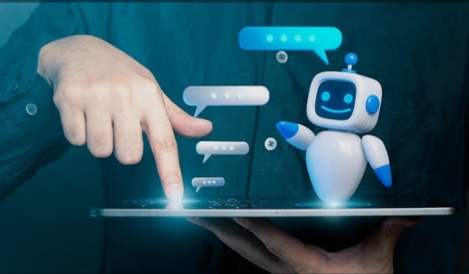

اسم الطالبة: شيماء خالد محمد البيلي
تُعد روبوتات المحادثة (Chatbots) من أبرز تقنيات الذكاء الاصطناعي الحديثة التي تسهل التفاعل الفوري مع المستخدمين وتقديم الدعم.
تساهم روبوتات المحادثة في تحسين تجربة العملاء، توفير الوقت، والرد على الاستفسارات على مدار الساعة.

| نوع الروبوت | آلية العمل | الاستخدام الشائع |
|---|---|---|
| القائم على القواعد (Rule-based) | يعمل وفق ردود مسبقة محددة. | خدمة العملاء البسيطة والأسئلة المتكررة. |
| المعتمد على الذكاء الاصطناعي (AI-powered) | يستخدم معالجة اللغات الطبيعية (NLP). | المساعدات الشخصية وفهم الحوارات المعقدة. |